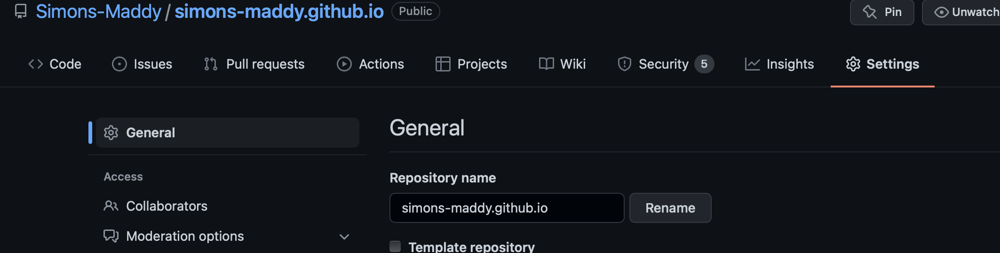

Preface
一直想做一个博客或网站，这样有经营自己店铺的感觉，也能记录一下自己的思考，培养科研外的副业技能；我平时有使用notion记笔记的习惯，于是我也想把自己的笔记分享给大家。
搭网站或者博客最基本的就是需要 服务器+域名，服务器和域名都可以去阿里云或者Amazon等服务商进行购买和注册，不懂如何操作的可以自行去百度一下（在帮助实验室建立和运营数据库的过程中摸爬滚打…）
服务器
国内建立web服务器需要备案，如果你的服务器在国内，用的是国内运营商的网络，就一定要进行ICP备案，而这个过程往往需要特别久的时间，所以我建议有条件使用国外的服务器，这样不需要进行ICP备案；域名
域名只要到阿里云或者Amazon等服务商进行注册或者购买，以阿里云为例，在aliyun中注册或购买你想要的域名，只要你账号进行实名，服务商会自动帮你进行域名备案；
为什么使用 GitHub Pages搭Blog:
1）首先他是完全免费的，相较其他的同类产品，他能替你省下一笔服务费，节约下的钱可以让你买一些其他的会员服务；
2）无须自己购买云服务进行搭建，虽然亚马逊上也有免费的云服务器，但是注册账号、登记借记卡和信用卡的过程有点繁琐，而GitHub Pages搭建博客只需按步骤一步步操作即可，即使你不懂他的技术细节；
3）支持的功能多，玩法丰富，你可以绑定你的域名、使用免费的 HTTPS、自己 DIY 网站的主题、使用他人开发好的插件等等；
4）当完成搭建后，你只需要专注于文章创作就可以了，其他诸如环境搭建、系统维护、文件存储的事情一概不用操心，都由 GitHub 处理
虽然GitHub Pages是静态网站，不能运行php/asp，不能从后端调取数据进行网页的动态加载，但是对于搭建个人Blog是完全足够的，所以这篇简要讲一下如何初步搭建自己的博客网站；
可以全程参考 GitHub Pages Documentation
一、注册Github 账户
略
二、新建一个Respository
进入页面后，在 Repository name 的位置填写域名，格式是 username.GitHub.io,GitHub Pages repository跟普通的repository是一样的，唯一的区别就是他的名字必须叫做username.gihub.io

这个官方教程 GitHub Pages写的十分好懂，按这个做完之后你就有了一个你的网址username.github.io，里面有一句 Hello World！
三、Blog Custom domain 设置
Custom域名（顶级域名）设置：
参考：Github官方文档；
要想使用自己的域名访问Github Page，就需要在域名提供商和Github上进行一下域名解析（以阿里云为例）；
1）首先，在域名提供商处进行域名解析；
2）在阿里云中配置至少一个ALIAS、ANAME或a记录；
如果配置ALIAS或者ANAME，记录值就是你的page的默认域名（username.GitHub.io）；
要创建A记录，指向GitHub页面的IP地址的顶点域：在记录值中填写以下一个IP地址
1 | 185.199.108.153 |
要创建AAAA记录，指向GitHub页面的IP地址的顶点域：在记录值中填写以下一个IP地址
1 | 2606:50c0:8000:: 153 |
如果使用一个顶点域名作为你的自定义域名，也建议设置一个www子域名。如果你通过你的DNS提供商为每个域类型配置正确的记录，GitHub页面将自动在域之间创建重定向。
我设置了一个顶级域名(chunfu.site)和一个次级域名(www.*)，方法类似，详见参考文档；
3）在Github中配置Custom域名
进入博客网站的repository，点击Setting选项，选择左边栏中的Pages选项；
填写你的自定义域名，等待生效一段时间后，你就能在浏览器上输入你自定义的域名进行访问啦
最后，为了要设置这个顶级域名，你必须在你的GitHub Pages存储库中的根目录下配置一个CNAME文件，填写一行你的顶级域名（例如我的chunfu.site）：
Custom次级域名的设置也类似，可以参考Github官方文档，我就不在这里赘述了；
四、Blog页面和主题设置
因为编写web网页需要会HTML、CSS和JS等语言，虽然Github能够自定义theme，能将Markdown格式的文本以网页的形式展现，但灵活性不够；将为了更方便大众建立自己的博客并提高Github Pages theme设置的灵活性，有许多工具可以辅助我们进行博客的发布，即使你不懂任何前端的技术。
我使用了Hexo来进行主题的设置和博客的快速发布，让发表博客像发朋友圈一样方便，如果你懂前端还能进行更多自定义的页面设计，这些内容放到下一章来讲。
参考
[1] GitHub Pages Documentation
[2] Creating a GitHub Pages site
[2] Managing a custom domain for your GitHub Pages site